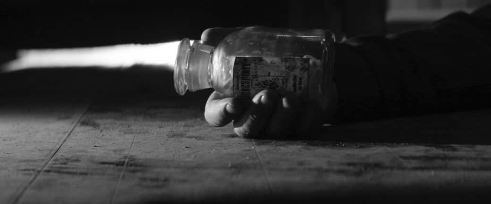
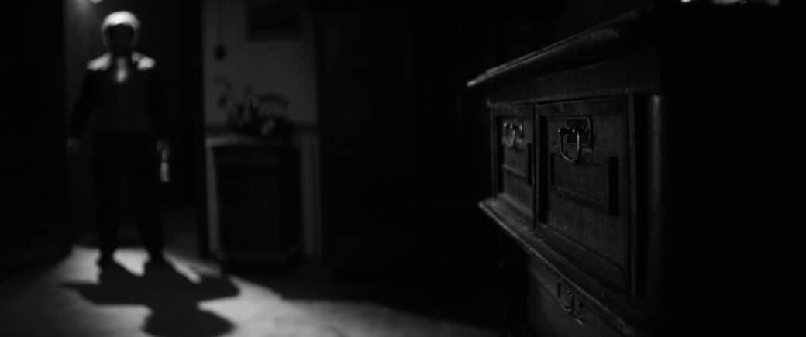

20 января мне удалось побывать на закрытом показе нового короткометражного фильма Beholder, основанного на одноименной российской инди-игре. Сняли его авторы короткометражки «Ваши документы» Никита и Лилия Ордынские. В этом материале я без спойлеров поделюсь впечатлениями и расскажу, удалось ли создателям передать атмосферу сурового тоталитарного государства в рамках отдельно взятого жилого дома.
Рецензия на короткометражный фильм «Ваши документы» (Papers, Please)
Beholder — это симулятор управляющего многоквартирным домом, работающего на авторитарное правительство и обязанного доносить на жильцов, нарушающих установленные директивы.
Важное место занимает выбор сделанный игроком: следовать букве закона или помочь жильцам с их проблемами. От него зависит состояние персонажей, игровые события и концовка. Игра увлекала тем, что в один момент все может перевернуться и помощь понадобится самому управляющему.
Перенести такой концепт на экраны помогала компания-разработчик Alawar Premium. Как и с короткометражкой «Ваши документы», многие элементы декораций приходилось строить самим, искать на барахолках или арендовать. Бюджет по словам Лилии составил «одну Тойоту Кароллу десятилетней давности».
С первых кадров глаз цепляется за визуальный стиль фильма: черно-белая картинка и внешний облик персонажей, повторяющий образы героев игры. Добились такого эффекта при помощи работы с контрастом черного и белого, где второе сильно выделяется на фоне первого.
Белым цветом ярко светятся очки, галстуки, подтяжки и т. д. Причем, такое свечение — это не компьютерная графика, а фосфорная краска! В фильме вообще очень мало графики, так как почти все создавалось на натуре.
И создавалось, стараясь не обидеть ни фанатов игры, ни простых зрителей. В короткометражке множество отсылок к оригинальному Beholder: предметы, бланки для доносов, даже некоторые механики перенесли! Ты смотришь на экран, а в голове проносится: «Да, там это действительно было!»
В ленте нет ни единой реплики, поэтому звуковое сопровождение как никогда важно. Выбор пал на кавер песни «Скованные одной цепью» и, честно сказать, она добавляет мрачности, делая тяжелые варианты решения еще сложнее. Ее ритм заставляет почувствовать себя частью хладнокровной управленческой системы, где нет выбора без негативных последствий, благодаря чему это понимают не только герои картины, но и сами зрители.
Главную роль управдома исполнил Евгений Стычкин («Восьмидесятые», «Пятница», «Измены», «Чернобыль»), за короткий хронометраж в 10 минут он провел зрителя во внутренний мир человека, у которого есть, пускай мнимая, но все же власть.
Но наступает момент, когда она не может помочь, а люди отворачиваются, потому что боятся, и человек сам боится. В такой миг приходит отчаяние, и Стычкин его отлично показал.
Из любого отчаянного положения можно найти выход, но концовка конкретно этой истории открытая — зритель может решить сам, что было дальше. А вот решение, посмотреть или нет, принять намного проще. Если вы фанат игры, то вам точно понравится то, с каким уважением ее перевели в киноформат. Если вы не знакомы с первоисточником, но любите хорошие антиутопии, то придется немного напрячь внимание, чтобы понять происходящее.
